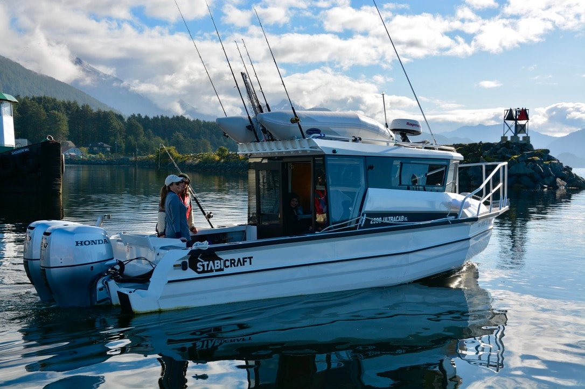

The captain and the boat Every build
One boat, one captain, your day on the Sound
Outer Coast Charters runs out of Sitka, on the western side of Baranof Island in Southeast Alaska, and it is owned and operated by year-round resident, adventure outfitter and fishing fanatic Captain Christopher Paul Jones.
Every adventure is a private charter for a small party, custom designed around you and carried out aboard Suzy Q, a Coast Guard approved safety boat with a heated cabin. You pick the start time, and you pick how long to stay out.
In their own words, trimmed, from the home, services and About pages of outercoastcharters.com and the Viator listings.
There’s no place I’d rather be or explore than Southeast Alaska. Here we have the bounty of the Pacific Ocean at our doorstep, with over 17,000 miles of coastline encompassing the Tongass National Forest, the largest intact temperate rain forest in the world.Captain Christopher Paul Jones, on his About page
Your Services page says “35+ years on the water” and your Viator listings say “over 30 years,” so I wrote 30+. Tell me the number you would like. I used “Captain Christopher Paul Jones” the way your About page and Trout Unlimited do, and I left out a photo of you for now: if you would like one at the helm here, send it and it goes in.
